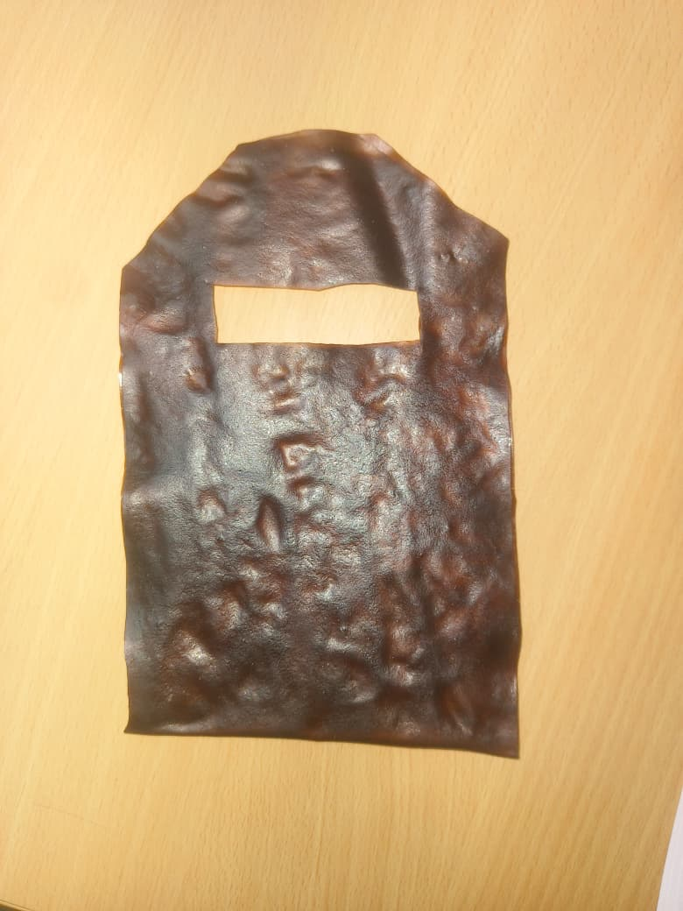
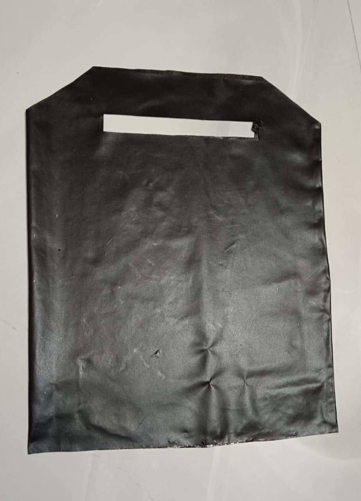

Peel Today, Protect Tomorrow 🌱


Our biodegradable bag is made from banana peels and helps reduce plastic pollution.
Scan the QR code to access product details and freshness information.
100% biodegradable and eco-friendly packaging solution.
The bag has good carrying strength and can hold lightweight to medium-weight grocery items effectively. The bag1 can carry upto 1-2 Kg weight whereas the bag2 can carry upto 3-4 Kg weight.
The biodegradable bag is durable for daily usage under dry conditions and maintains its structure for a suitable time period.
Avoid excessive water exposure and sharp objects to prevent tearing or damage to the biodegradable material.
Store in a cool and dry place away from direct sunlight and moisture for better shelf life.
The biodegradable bag made from banana peels naturally decomposes when exposed to soil, moisture, and microorganisms.
Estimated decomposition time: 50–60 days under suitable environmental conditions. During decomposition process the bag does not cause any odour.